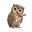
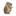
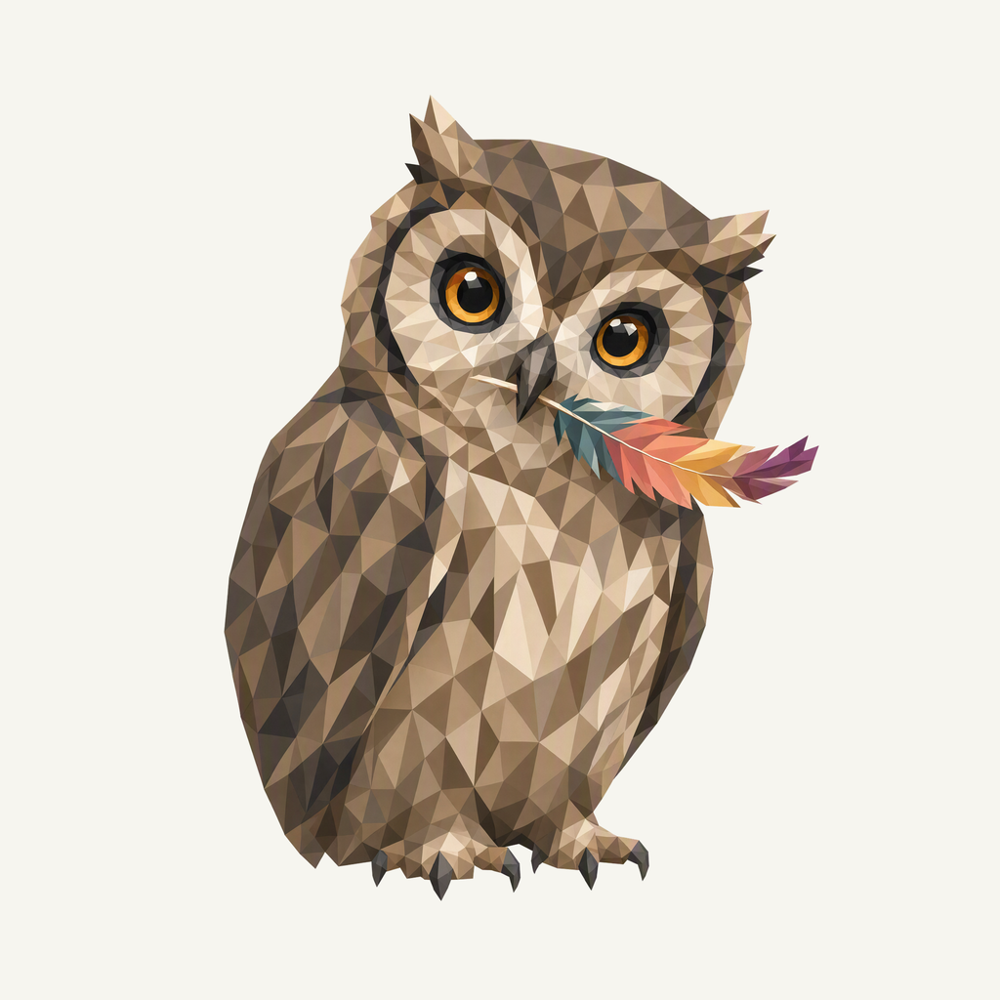
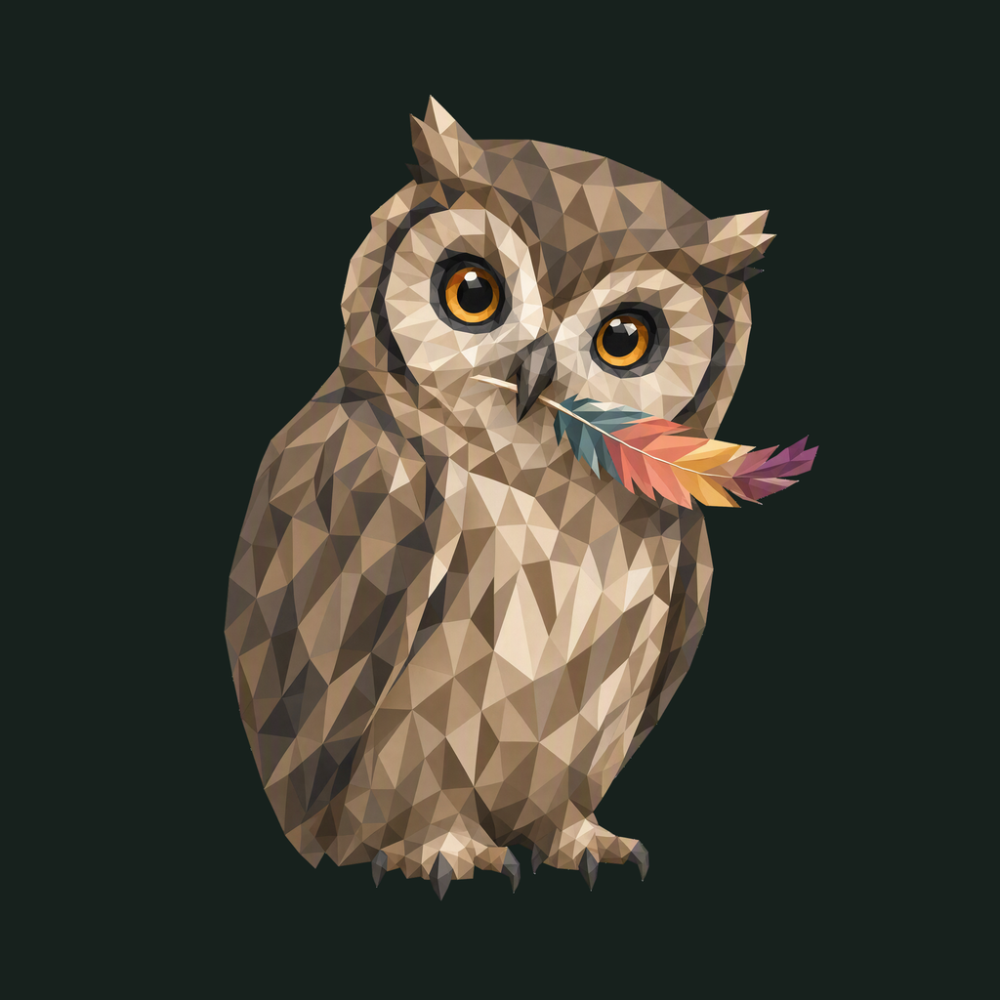

01 / Composition
A feather caught mid-turn
A compact whole owl tilts its head, with both eyes, folded wings and every talon visible. One feather extends from the beak into the surrounding space.
Animal family · Refined identity
An observant little owl catches a feather mid-turn. Tawny plumage rests against a quiet night field.
Adopted redesign · finishing 01
Native 2048 × 2048

01 / Composition
A compact whole owl tilts its head, with both eyes, folded wings and every talon visible. One feather extends from the beak into the surrounding space.
02 / Drawing
Broad neutral facets organize the plumage. Cream facial discs and amber eyes preserve recognition; the feather is the only multicolored accessory.
03 / Presentation
Interrupted crescent steps and offset notches form a smoky-blue observatory field. The pattern stays distinct from feather stripes and light orbits.
Presentation tiles at 128/64 px; transparent artwork for small app and browser marks.


The complete bird and feather have at least 193.5 px of rounded-edge clearance. The native popover uses a transparent 22 pt mark; macOS app icons use a separate rounded tile with a platform inset. Browser specimens demonstrate the identity at small sizes.
A designed background, with colors sampled from the exact native artwork.
Select a swatch to copy its hex value. Artwork colors and platform system colors are documented separately.
One transparent foreground, checked on two contrasting backgrounds.


Azure Foundry · gpt-image-2 · one request · native 2048 × 2048
Loading study text…
The previous identity is historical context; the current brief defines the selected animal, gesture and palette. Frogie guides connected flat facets; these owner-provided boards guide the independent background, offset framing, and matte surface.


{kind=link}
{kind=link}
{kind=link}
{kind=link}
{kind=link}